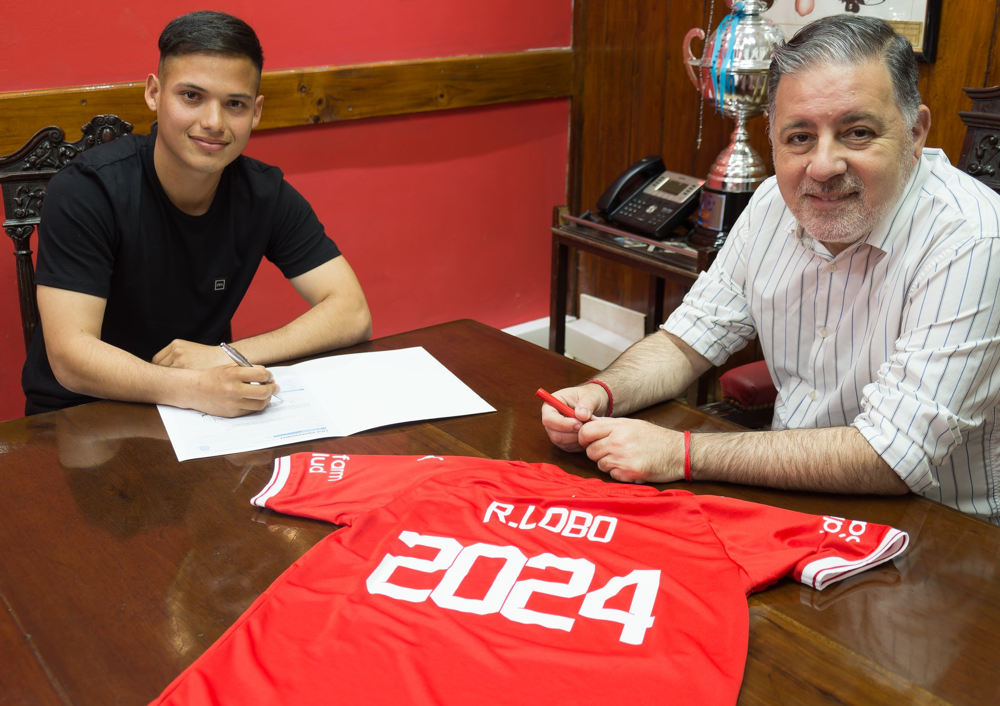
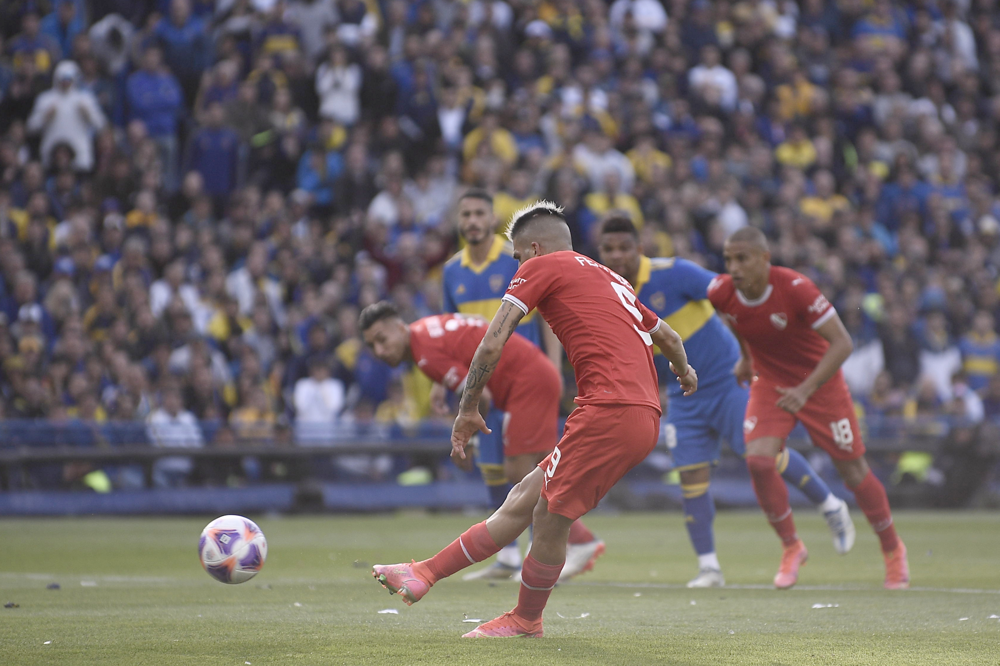

Inferiores poniendose la camiseta.

Los chicos de la tercera y reserva, firmando su primer contrato profesional.
El club necesita mucho de su fuerza en estos tiempos.
Las mujeres llegando a la gloria.
No todos es futbol 11 AFA, las chicas de futsal tambien juegan y muy bien. Tuvieron un gran torneo, lo que les permite soñar con un buen porvenir.
Terminando el campeonato.

Luego de tanto hablar de Independiente, no se dejaron dudas. El rojo siempre va al frente, con las manos limpias y los brazos en alto.